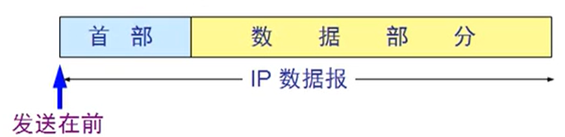
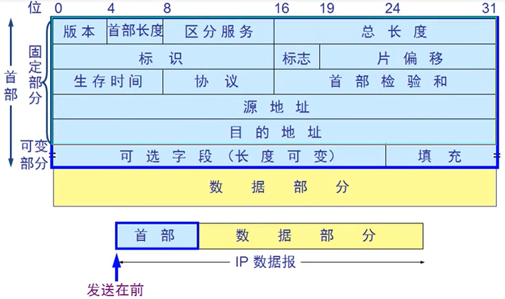
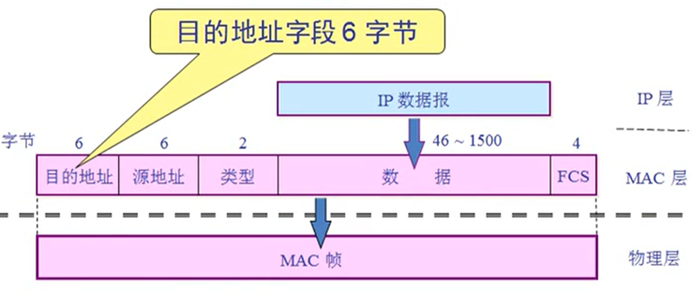
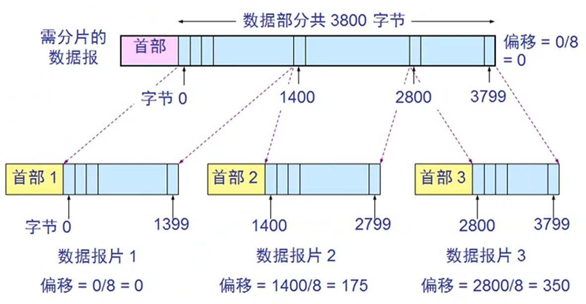
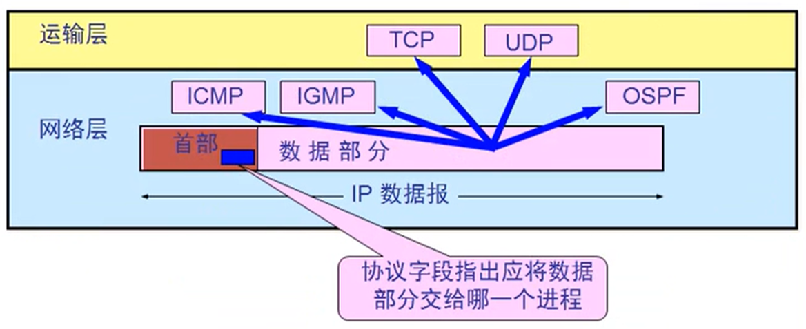
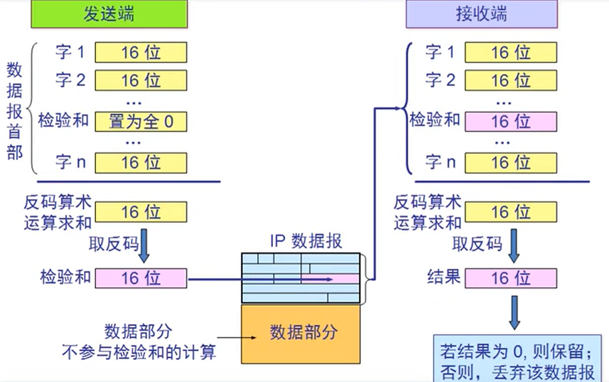
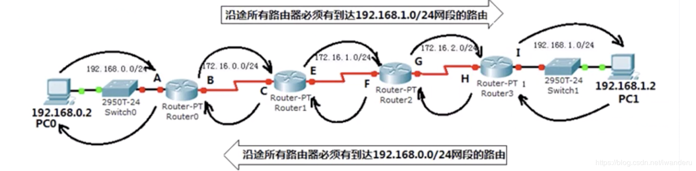

IP数据包与路由 链接到标题
IP数据包 链接到标题
一个IP数据包由首部和数据两部分组成。

- 首部的前一部分是固定长度，共字节，是所有 IP 数据报必须具有的。
- 在首部的固定部分的后面是一些可选字段，其长度是可变的。
数据包结构 链接到标题

- 版本：用来表示 TCP/IP 协议的版本 v4,v6
- 首部长度：确定数据包首部有多长，因为包含可变部分。
- 区分服务：确定更高的传输优先级。(QoS 机制)
- 总长度：确定数据部分长度，一共 16 位，最多有 2^16-1=65535 字节。
传输限制：数据包最大 65535 字节，而数据链路层最大传输 1500 字节，所以对于大于 1500 字节的数据包，将会进行分片传输。（最大传输单元 MTU） 分片传输：将数据进行分割，分别添加 IP 地址，通过网络发给接收端。接收端在通过网络层进行拼接，传送过程中可能存在丢包现象，或者后发的先到，所以需要对分片的数据包进行编号。 泪滴攻击：指的是向目标机器发送损坏的 IP 包，诸如重叠的包或者过大的包载荷。借由这些手段，该攻击可以通过 TCP/IP 协议栈中分片重组代码中的 bug 来瘫痪各种不同的操作系统。
以太网 V2 数据帧模式：

- 标识：如果出现数据包分片，那么标识用来确定哪些数据包需要组合，进行相同标记。
- 标志：占位，目前只有前两位有意义。标志字段的最低位是 MF(More Fragment)，MF=1 表示后面还有分片，MF=0 表示最后一个分片，标志字段中间的一位是 DF(Don`t Fragment)，只有当 DF=0 时才允许分片。
数据包分片举例：

- 片偏移：偏移等于当前字节在数据部分的第几个再除以 8.
- 生存时间：就是 TTL(Time To Live)，每经过一个路由器就减 1，8 位二进制，作用是防止数据包在网络中循环。
- 协议号：用协议号标识数据部分是什么数据。
- ICMP：1, IGMP：2, TCP：6, UDP：17, IPv6：41, OSPF：89

- 首部检验和：16 位，只检验数据报的首部，不检验数据部分，这里不是采用 CRC 而是简单的计算方法，每经过一个路由器就会检验一次。

- 源地址和目的地址：都是 IP 地址，32 位，只符合 IPv4.IPv6 是 128 位。
- 可变部分：一般没用，IPv6 已取消。
IP 协议 链接到标题
网络畅通的条件 链接到标题
沿途路由器必须知道下一跳给谁，数据包有去有回。

静态路由 链接到标题
需要管理员手动设置路由表，适用于小规模网络，不能自动调整路由。
动态路由 链接到标题
- RIP 协议 作用是周期性广播路由表，选择最佳路径，能够自动学习路由，最大 15 跳，不适合大规模网络。
- OSPF 协议 根据带宽选择路径